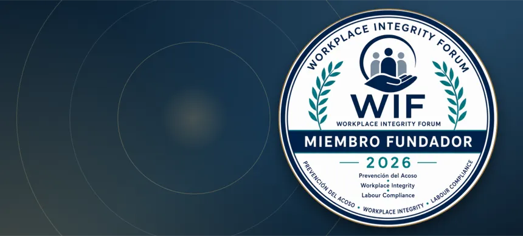
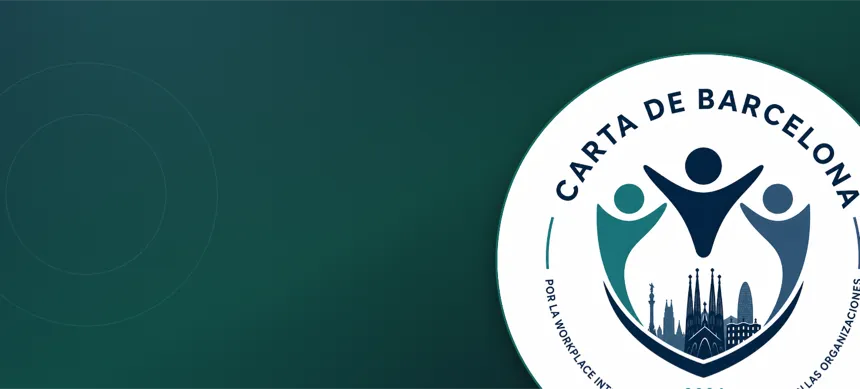
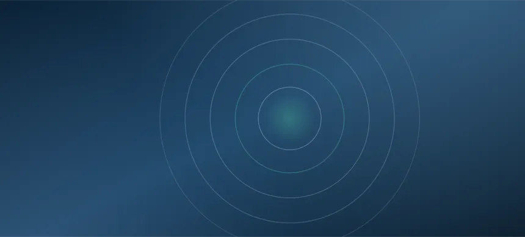
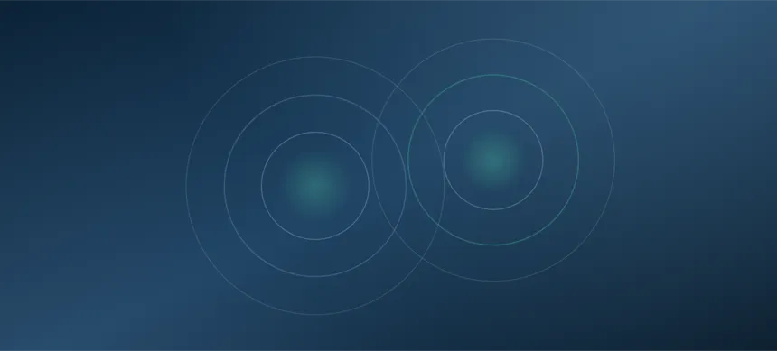
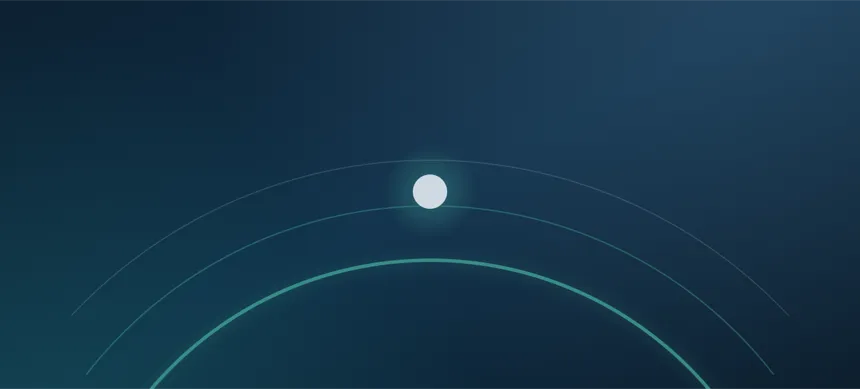

Inicio / Actualidad
Actualidad
Iniciativas, actividades e incorporaciones relacionadas con WIF, la Carta de Barcelona y el Congreso Nacional.
Lo más reciente.

Founding CircleNuevas organizaciones fundadoras se incorporan al WIF Founding Circle 2026
WIF amplía su comunidad fundacional con entidades comprometidas con la prevención del acoso.
Leer más →
Carta de BarcelonaNuevas adhesiones a la Carta de Barcelona
Diversas organizaciones formalizan su adhesión, reforzando el compromiso colectivo con la dignidad en el trabajo.
Leer más →
Congreso · Nov 2026Avanza la preparación del Primer Congreso Nacional
WIF continúa trabajando en la organización del Congreso que tendrá lugar en noviembre de 2026.
Leer más →El European Center publica nuevos materiales de reflexión
Nuevas iniciativas para fortalecer el conocimiento en prevención del acoso, Workplace Integrity y Labour Compliance.
Leer más →
ComunidadAgenda de actividades y encuentros
En esta sección se publicarán las actividades, encuentros y eventos impulsados por WIF.
Leer más →
WIFSuscríbete a las novedades de WIF
Recibe las próximas actualizaciones de la comunidad directamente.
Contactar →No te pierdas las novedades.
Contacta con la Secretaría Técnica para recibir las próximas actualizaciones de la comunidad WIF.